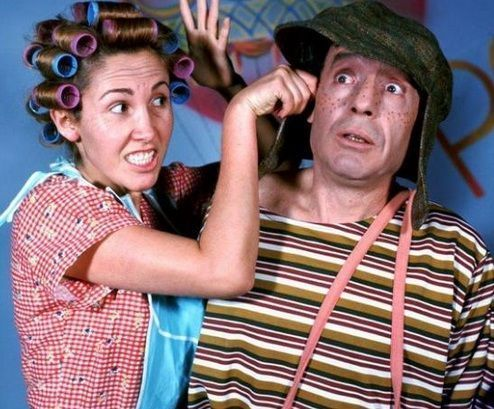

Página creada antes de que el último ingeniero de Colombia desapareciera.
Colombia recuperó a todos sus ingenieros y logro convertirse en un país del primer mundo.
Con respecto a tí, fuiste condecorado por el presidente de la República por tu valentia e inteligencia, las cuales lograron conseguir el antídoto.
Como recompensa, te dieron a escoger entre un computador de ASUS Republic of Gamers y alcohol ilimitado, y por supuesto como es lógico escogiste el computador.
Por último encontraste un nuevo sitio web que podría salvar a Venezuela y Corea del Norte de su tiranía y cuando salgas a vacaciones lo probaras, ya que en estos momentos estas lleno de trabajos.
Los paises involucrados con el hacker recibieron su buena cachetada de doña Florinda, ya que te lograste comunicar con el Chavo para pasarle la información de los paises malvados y el le conto a Quico, y como era de esperar Quico los acusó con la mamá.
